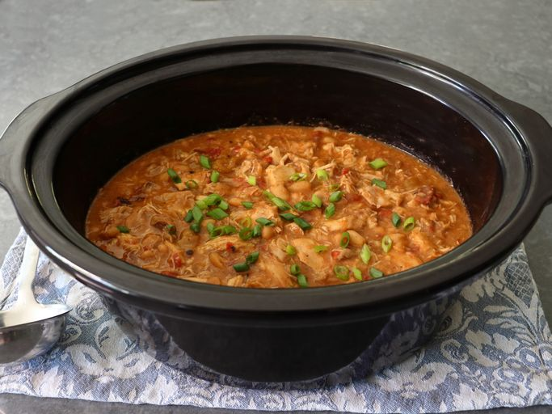

Home
All recipes and images were taken from All Recipes
Mississippi Chicken Chili Recipe

Description
Chef John's Mississippi chicken chili could not be easier to make in the slow cooker with only a handful of
ingredients. Made with cannellini beans, pepperoncini peppers, and a whole stick of butter , the chili comes out
rich and delicious. You can substitute any canned beans for the cannellini beans.
Ingredients
-
3 pounds boneless skinless chicken thighs
-
1 (1-ounce) packet powdered au jus gravy mix
-
1 (1/2 ounce) packet powdered ranch dressing mix
-
1 tablespoon chili powder
-
2 (15-ounce) cans white kidney beans (cannellini beans), drained
-
1/2 cup pepperoncini pepper brine (from the jar)
-
1 (15-ounce) can fire-roasted diced tomatoes
-
1/2 cup sliced pepperoncini peppers
-
1 stick unsalted butter, sliced into 8 pieces
Steps
-
Place chicken thighs into a slow cooker. Sprinkle over the powdered au jus gravy mix, ranch dressing, and
chili powder. Top with cannellini beans, pepperoncini pepper brine, fire roasted diced tomatoes, sliced
pepperoncini peppers, and butter.
-
Cover, and cook until chicken thighs are fork tender, on High for 3 to 4 hours or on Low for 6 to 8 hours. During the cooking time, use tongs or a long spoon to stir and redistribute the ingredients every hour or so.
-
Once chicken is tender, transfer chicken thighs to a bowl. Use a pair of the kitchen scissors to cut chicken thighs into about 1-2-inch pieces. Transfer chicken thighs back into the chili in the slow cooker, and stir to combine. Reduce heat setting to warm mode, and taste for seasoning before serving.